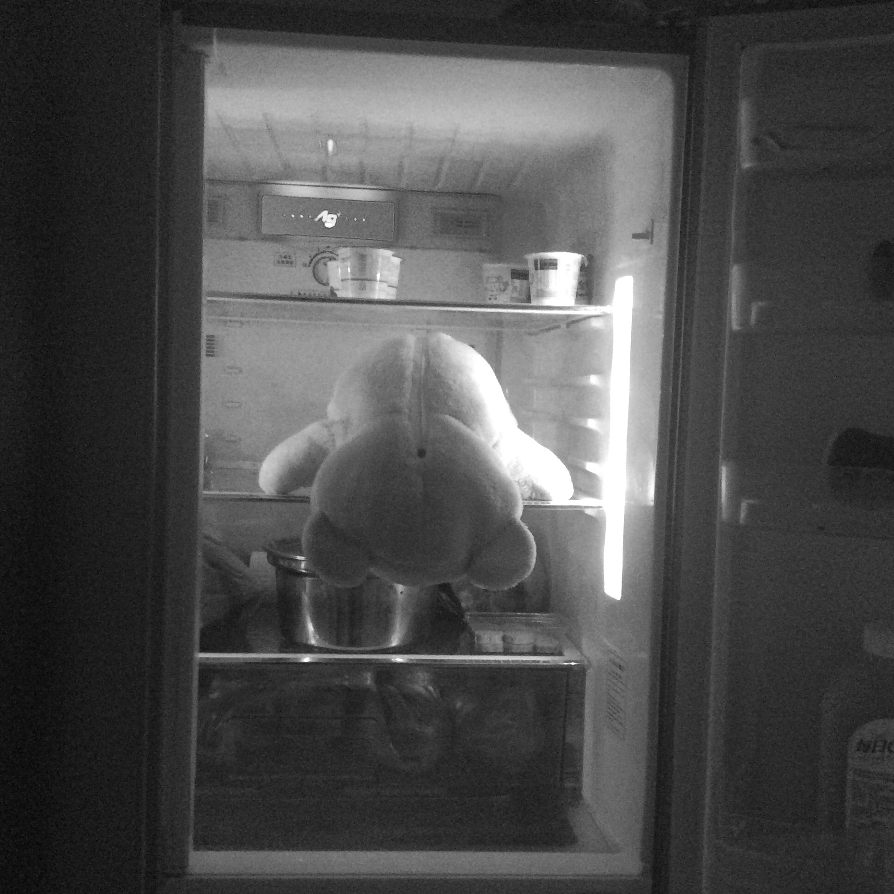

詩詞
 涼梅在超級電腦裡設定了許多關鍵字，又把她一路寫來的詩詞全都輸入資料庫裡。
「好了。」她按下確認鍵。
電腦問她：「你確定要這樣嗎？」
「對。」涼梅毫無猶豫，「我走後，你就靠這些資料模仿我的文筆，我會寫的關鍵字都存進去了，你的分析重組程序是我設計的，絕對沒有問題，讀者不會知道他們手上捧的熱騰騰的新書是超級電腦寫的。」
「但以關鍵字為主軸再做擴寫，又要考慮人類的邏輯，必定會有所限制。」
涼梅幫自己注射藥劑，一邊說：「我的靈魂就只在這些關鍵字裡，而且永遠被他們束縛住了，所以給電腦寫，還是比我更多變。」
「那就祝你好運了。」
「謝謝。」
涼梅走進梨子形狀的機器中，她畫著全妝，口紅點綴她細白的皮膚，她輕輕與超級電腦揮手，示意它啟動機器。
「嗶──」
涼梅回到了過去，她身處在三年後將被拆除改建的老舊公寓門口，她走出巷子，右轉，直走，看到一座小小的公園，褪色而簡陋的遊樂設施，混濁悠遊著鯉魚的池塘，榕樹，一片草地。
涼梅走入草地，一朵小小、小小的花苞挺立在一片綠色中，不顯眼又脆弱。
她蹲下身凝望著花苞，指尖輕輕觸碰，花開了。